인증과 인가는 다른 얘기예요
영상은 실제 사고 하나로 시작해요. 작년 맥도날드 채용 사이트의 관리자 비밀번호가 123456이었고, 그 탓에 지원자 약 6,400만 명의 이름·이메일·전화번호와 대화 내용이 노출됐어요. 이런 사고를 막는 체크리스트가 이 영상의 주제예요.
체크리스트는 모두 16개이고, 관련 있는 것끼리 4부로 묶었어요. 이번 영상은 3부(인증·인가)와 4부(암호화·개인정보 처리방침), 곧 9번부터 16번까지를 다뤄요. 1부(API 키·환경변수)와 2부(데이터베이스 접근 권한)는 이전 영상에 있어요.
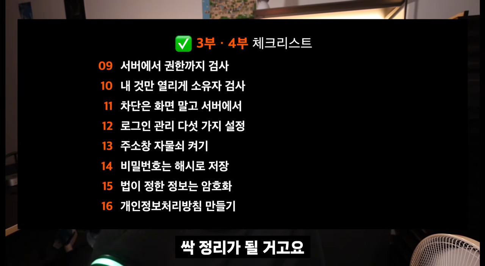
건물에 비유하면 쉬워요
회사 건물 1층에 경비실이 있다고 해 봐요. 신분증을 확인하고 '우리 회사 직원이 맞네' 하고 들여보내 주는 절차가 인증이에요. 들어온 사람에게 '사원은 5층까지, 6층부터는 임원만' 하고 갈 수 있는 층을 정해 주는 절차가 인가예요.
외우는 요령도 알려 줘요. 인증의 '증'은 신분증, 인가는 '너 몇 층까지 가?'로 기억하면 돼요. 문을 열어 주는 것과 층을 제한하는 건 완전히 다른 일이에요.
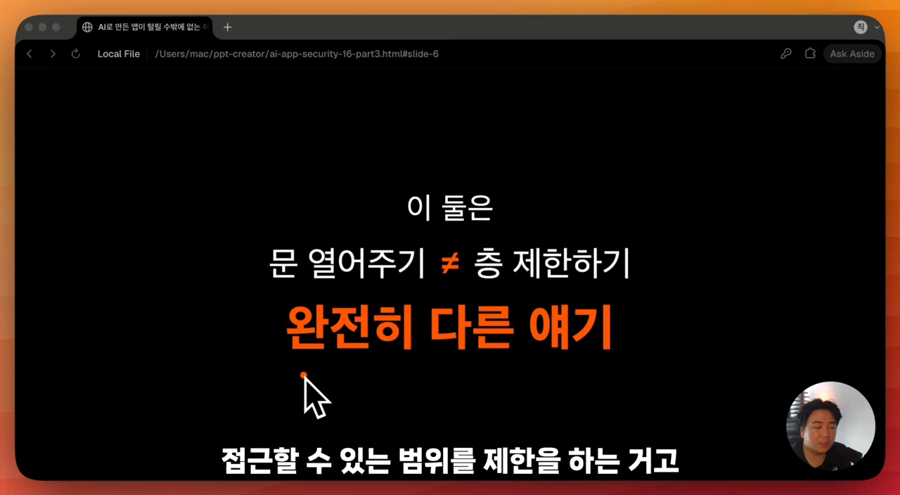
로그인만 됐다고 다 열리면 안 돼요 (9·10번)
AI에게 '로그인 기능 만들어 줘'라고 하면 회원가입·로그인 화면을 그럴듯하게 만들어 줘요. 잘 돌아가는 것처럼 보이지만 껍데기만 있는 경우가 많아요. 인가 처리가 없으면 로그인만 하면 남의 데이터까지 보여요. 사원이 임원실, 회장실까지 드나드는 셈이에요.
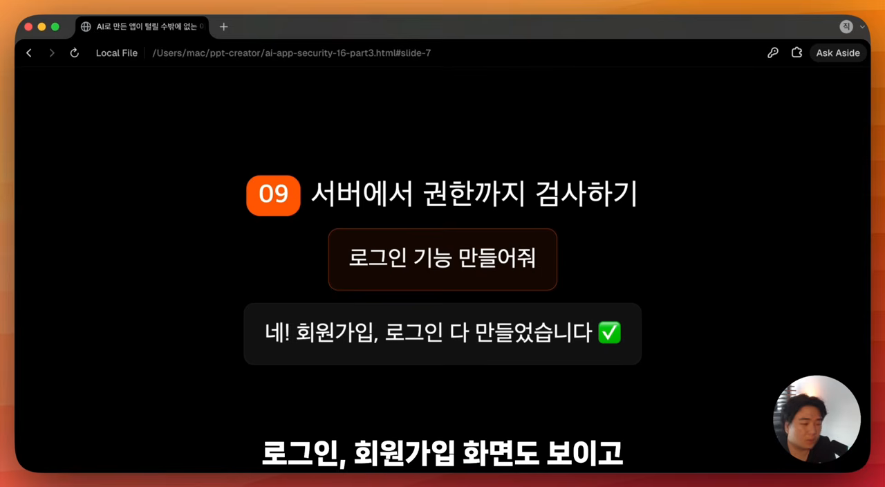
로그인이 된다고 끝난 게 아니에요. 확인하려면 권한 없는 일반 계정을 하나 만들어요. 그 계정으로 관리자 화면 같은 여러 주소에 들어가 보고, 하나도 열리지 않는지 꼼꼼히 봐요.
주소의 숫자를 바꿔 보세요 (10번)
특정 사용자의 페이지는 정말 그 사용자만 열 수 있어야 해요. 쇼핑몰 주문 내역 주소가 myapp.com/orders/1024라면, 1024가 주문 번호예요. 주소창에서 이 숫자를 1025로 바꿔 엔터를 칠 수 있죠. 그게 남의 주문이라면 열리면 안 돼요.
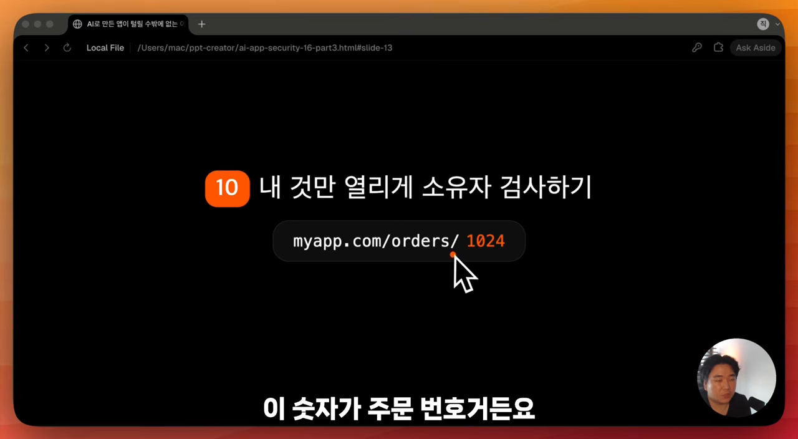
영상에서는 쿠팡에서 직접 산 공유기 주문 내역으로 시험해 봐요. 주문 번호 끝자리 6을 7로 바꾸자 '주문 정보가 존재하지 않습니다'가 떴어요. 다시 6으로 돌리면 잘 열렸고요. 쿠팡은 인가 처리가 잘 돼 있다는 뜻이에요.
남의 주문이 열리는 서버는 '이 데이터의 주인이 지금 로그인한 사람인가?'를 묻지 않은 거예요. 이 질문은 모든 요청마다 해야 해요.
점검은 AI에게 맡길 수도 있어요. 영상이 보여 준 요청문은 이래요.
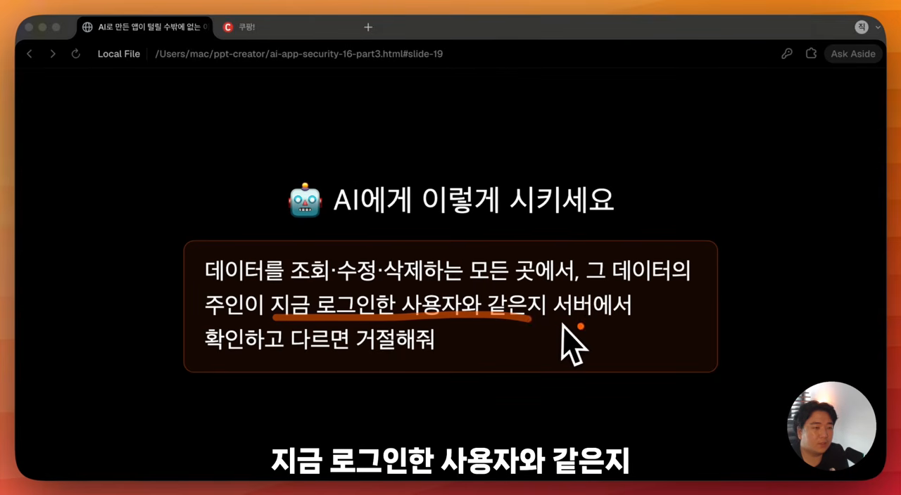
숨기지 말고 서버에서 막아요 (11번)
관리자로 로그인했을 때만 보이는 '관리자 모드' 버튼을 만들었다고 해 봐요. 일반 사용자로 들어가면 버튼이 숨겨져 있어요. 문제는 이 판단을 프론트엔드에서만 할 때예요.
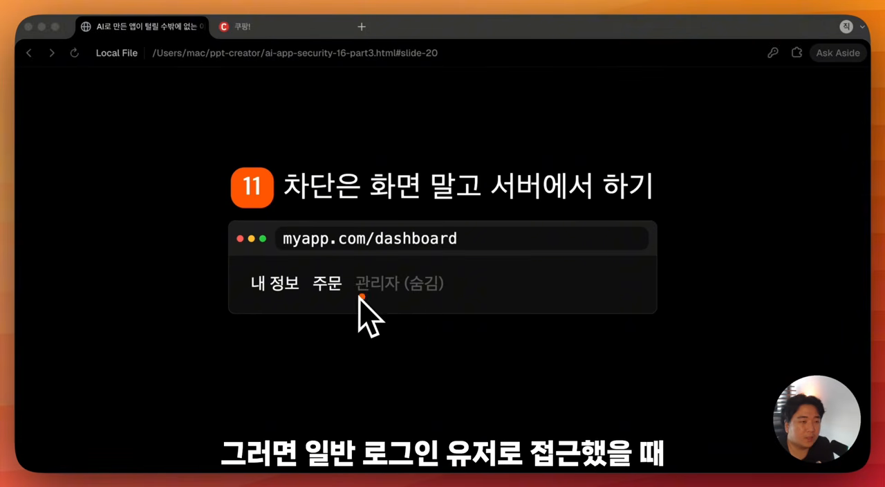
크롬 개발자 도구를 열면 버튼이 어느 주소로 요청하는지 다 보여요. 그 주소를 그대로 호출하면 일반 사용자도 관리자 기능을 쓸 수 있어요. '관리자면 관리자 화면으로 보낸다' 같은 로직이 프론트엔드 코드에 있으면, 관리자 주소도 브라우저에서 쉽게 알아낼 수 있고요.
| 화면에서 감춤 | 서버에서 차단 | |
|---|---|---|
| 메뉴 | 안 보여요 | 안 보여요 |
| 주소를 알아내 직접 호출하면 | 그대로 열려요 | 요청 자체를 거절해요 |
| 안전한가요 | 아니에요 | 권한이 없으면 처리하지 않아요 |
11번의 핵심은 한 문장이에요. 화면에서 안 보인다고 못 하는 게 아니에요. 그래서 인증·인가 판단은 절대 프론트엔드에만 두면 안 되고, 서버가 맡아야 해요.
로그인 관리 다섯 가지 (12번)
12번은 로그인과 관련해 챙길 다섯 가지를 묶은 항목이에요.
| # | 할 일 | 안 하면 생기는 일 |
|---|---|---|
| 1 | 로그인 시도 횟수 제한 | 프로그램으로 비밀번호를 수십만 번 대입해 볼 수 있어요 |
| 2 | 토큰에 만료 시간 넣기 | 출입증이 평생 유효해서, 탈퇴해도 로그인 상태가 남을 수 있어요 |
| 3 | 관리자 토큰을 브라우저에 저장하지 않기 | 모든 사용자가 그 토큰으로 관리자 기능을 쓸 수 있어요 |
| 4 | 기본 관리자 계정 바꾸기 | admin / admin, test1234는 누구나 짐작해요 |
| 5 | 관리자 계정에 2단계 인증 걸기 | 비밀번호 하나만 뚫리면 끝나요 |
시도 횟수와 토큰 만료
시도 횟수를 막지 않으면 프로그램이 비밀번호를 수없이 바꿔 넣어 봐요. '5회 이상 틀리면 로그인 제한' 같은 기능이 이걸 막아요.
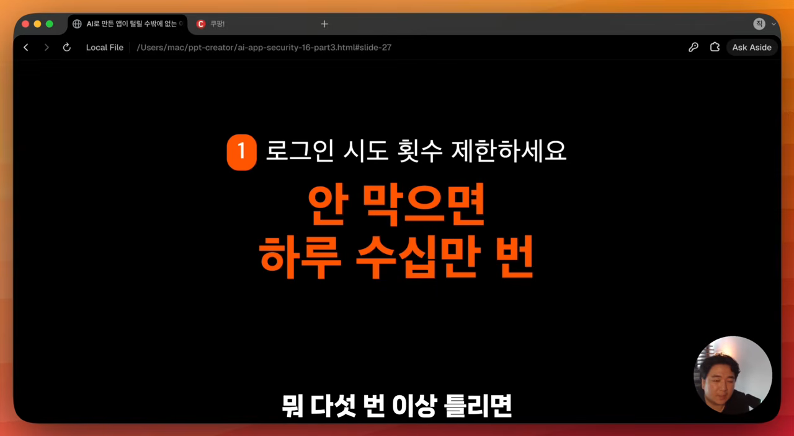
토큰은 '이 사람은 로그인한 정상 회원'이라는 출입증이에요. 만료가 없으면 평생 유효하고, 갱신하지 않으면 탈퇴한 사람이 로그인 상태로 남는 일도 생겨요. 구체적으로는 JWT 이야기인데, 영상은 다룰 내용이 많아 다음 콘텐츠로 미뤄요.
관리자 토큰과 기본 계정
테스트하려고 관리자 토큰을 브라우저 로컬 스토리지에 넣는 코드를 쓰는 경우가 있어요. 지우면 괜찮지만, 남은 채로 배포하면 서비스를 쓰는 모든 사용자가 그 토큰으로 관리자 기능을 쓸 수 있어요. 영상은 이런 코드를 아예 쓰지 말라고 권해요.
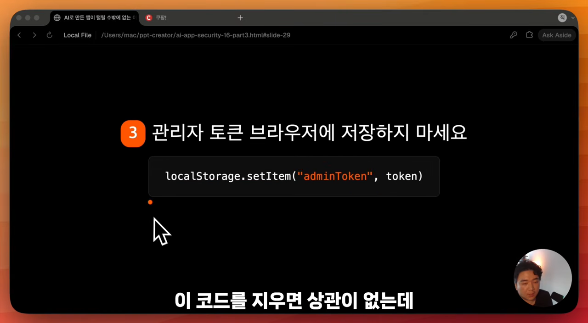
아이디와 비밀번호를 누구나 아는 문자열로 두는 것도 안 돼요. 도입부의 맥도날드 사고가 바로 이 경우였어요. 관리자 계정에는 이메일이나 문자로 한 번 더 확인하는 2단계 인증을 걸면 훨씬 안전해져요.
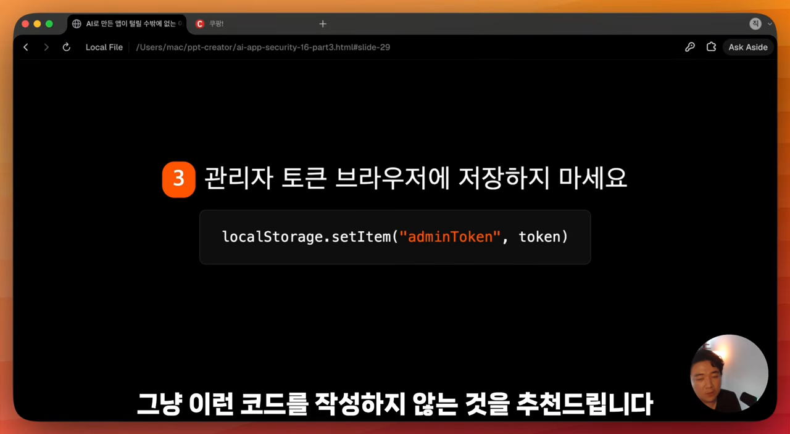
전송은 HTTPS, 비밀번호는 해시 (13·14번)
여기부터 4부, 암호화와 개인정보 처리방침이에요.
주소창 자물쇠를 확인해요 (13번)
HTTP는 웹에서 통신하는 규약이고, 끝의 S는 Security예요. 그래서 HTTPS는 암호화된 통신 규약이라고 보면 돼요. 꺼져 있으면 로그인할 때 서버로 보내는 아이디·비밀번호가 암호화 없이 그대로 노출돼요.
확인은 간단해요. 네이버처럼 주소창에 자물쇠가 보이고 '이 연결은 안전합니다'가 뜨면 돼요. Vercel 같은 배포 플랫폼은 자동으로 적용해 줘요. 반면 맥미니 등으로 직접 서버를 호스팅한다면 수동으로 켜야 해요.
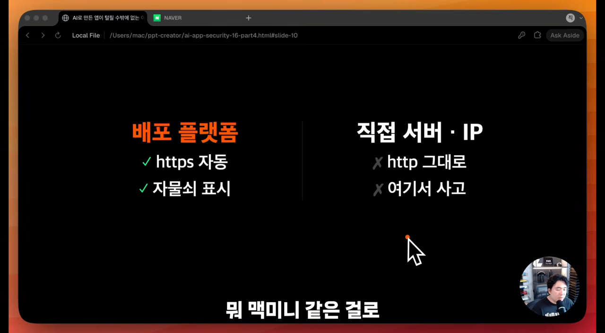
비밀번호는 암호화가 아니라 해시예요 (14번)
해시는 어떤 텍스트를 고정된 길이의 다른 텍스트로 바꾸는 거예요. 암호화와 비슷해 보이지만 방향이 달라요.
| 암호화 | 해시 | |
|---|---|---|
| 방향 | 양방향 (A → B → A) | 단방향 (A → C, C에서 A로 못 돌아감) |
| 되돌리기 | 복호화로 원문을 다시 얻어요 | 되돌릴 수 없어요 |
| 비밀번호에 | 쓰지 않아요 | 이걸 써요 |
해시를 제대로 썼다면 서비스를 만든 사람도 고객 비밀번호를 알 수 없어요. 그게 정상이에요. DB에 비밀번호를 저장한다면 테이블을 직접 열어 보세요. 원문이 그대로 보이면 반드시 해시로 바꿔 저장해야 해요.
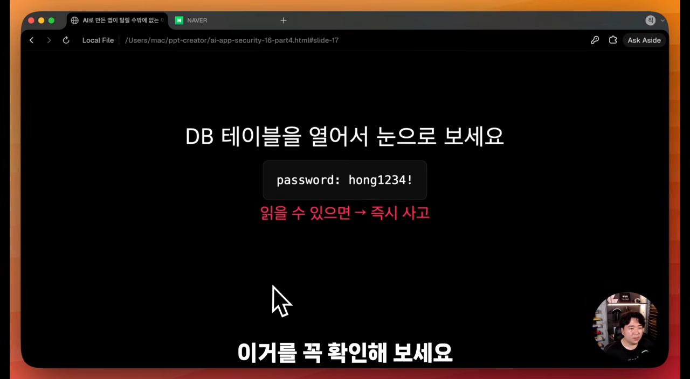
AI가 해시 함수를 직접 짜 주는 경우도 있어요. 그러지 말고 bcrypt처럼 검증된 방식을 써야 해요. 직접 서버를 구축하기보다 검증된 인증 서비스를 쓰는 것도 방법이에요. 슬라이드의 요청문은 Supabase Auth로 옮기는 방법까지 묻고 있어요.
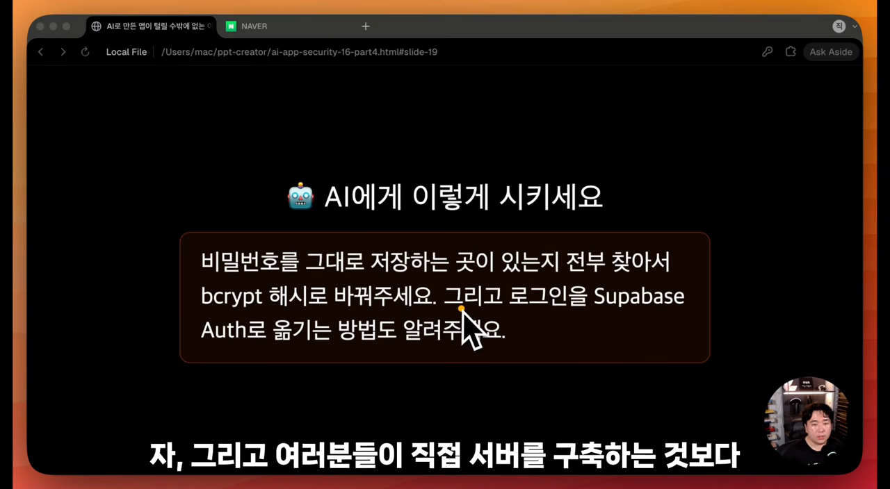
법이 정한 정보와 개인정보 처리방침 (15·16번)
법이 정한 정보는 따로 챙겨요 (15번)
저장할 때 반드시 보호해야 하는 정보는 법으로 정해져 있어요. 영상이 꼽는 건 네 가지예요.
- 고유식별정보: 주민등록번호, 여권번호 같은 것
- 비밀번호
- 생체정보
- 계좌번호·카드번호
근거는 개인정보보호법에 딸린 '안전성 확보조치 기준'이에요. 권고가 아니라 법이 요구하는 사항이에요.
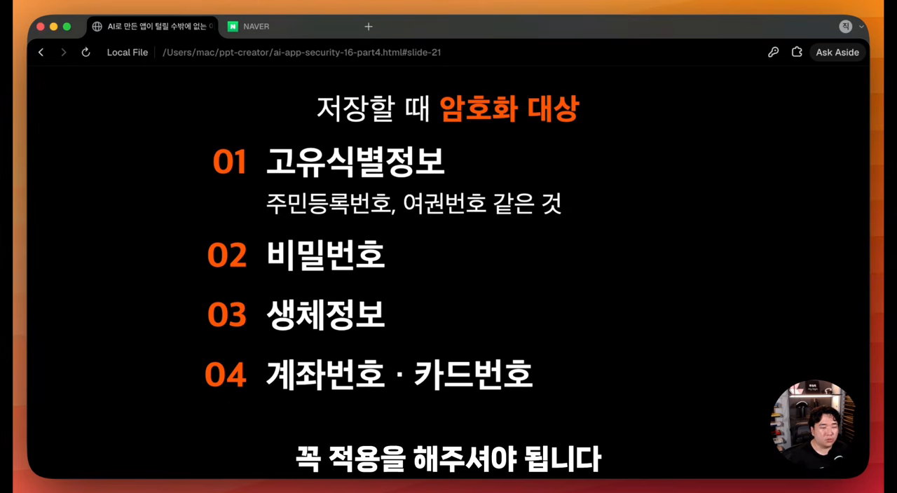
여기서 한 번 짚고 갈게요. 화자는 앞의 14번에 이어 이 네 가지도 '암호화가 아니라 해시'라고 말해요. 하지만 슬라이드와 AI 요청문에는 '암호화'라고 적혀 있어요. 실제 기준도 다음 보충 설명처럼 비밀번호만 해시를 요구해요.
더 중요한 건 안 쓸 정보는 아예 받지 않는 거예요. 정말 필요한 것만 받으면 지킬 것도 줄어요. AI에게는 수집하는 개인정보 항목을 전부 뽑고, 없어도 되는 항목을 표시하고, 필요한 항목은 저장할 때 보호되는지 확인해 달라고 하면 돼요.
개인정보 처리방침은 의무예요 (16번)
시작 전에 영상은 이 내용이 법률 자문이 아니라고 밝혀요. 어떤 정보를 다루느냐에 따라 적용되는 규정이 달라져요. 취미가 아니라 실제 사업으로 키울 거라면 법률 전문가에게 꼭 확인받으라고 해요. 여기서는 최소한 알고 있어야 할 것만 다뤄요.
개인정보 처리방침은 선택이 아니라 의무이고, 보이는 곳에 게시하는 것까지가 의무예요. 이메일 주소 하나만 받아도 개인정보처리자가 되거든요.
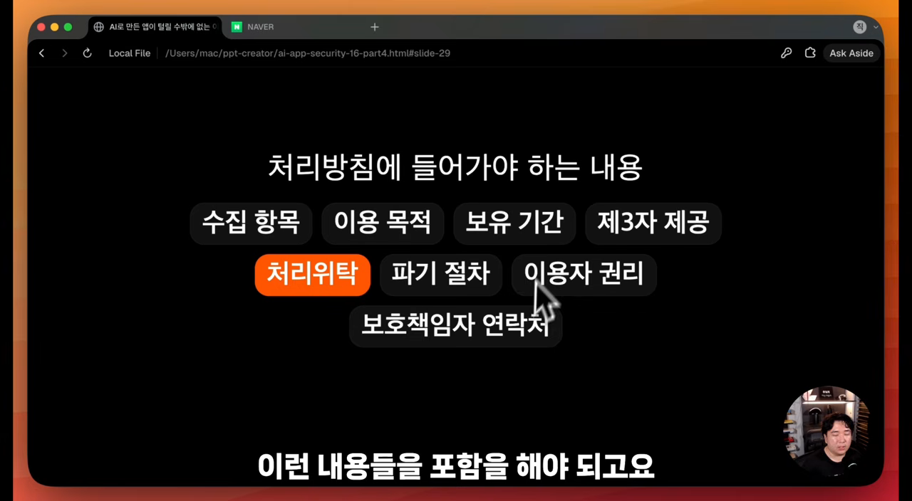
바이브 코딩에서 특히 놓치기 쉬운 건 처리위탁이에요. AI API, 클라우드 DB, 이메일 발송, 분석 도구처럼 외부 서비스에 사용자 정보가 넘어간다면 위탁 항목에 적어야 해요. 어떤 서비스를 쓰는지 본인도 모를 수 있으니 AI에게 정리를 시키면 편해요.
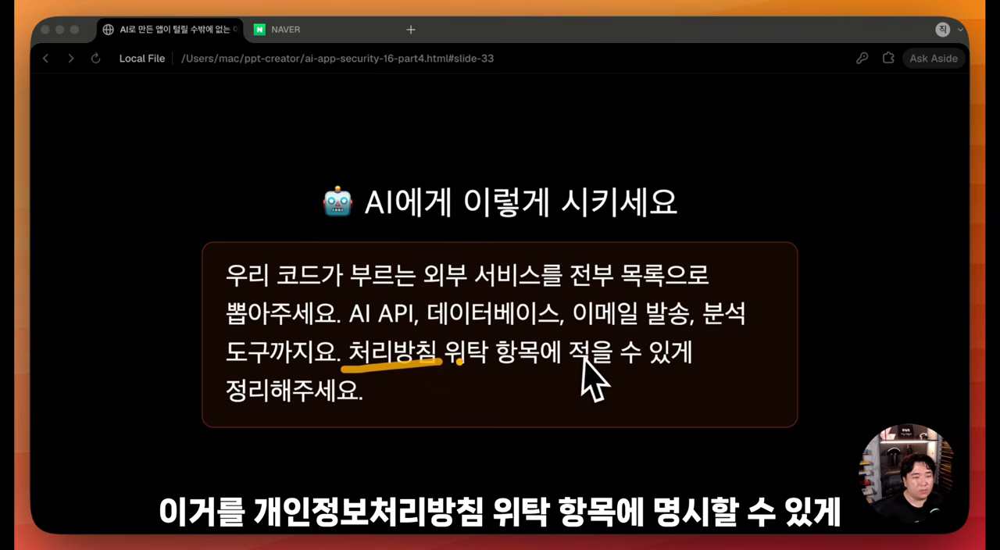
4부를 정리하면 이래요. HTTPS를 켜고, 비밀번호는 해시로 저장하고, 법이 정한 정보는 알아볼 수 없게 저장해요. 그리고 처리방침을 써서 게시하되 위탁 항목까지 넣어요.
보너스: OWASP Top 10
마지막으로 OWASP Top 10을 소개해요. OWASP는 웹 애플리케이션 보안을 다루는 전 세계 비영리 단체예요. 이곳이 가장 중요한 웹 애플리케이션 취약점 10가지를 골라 발표하는 게 Top 10이에요.
쓰는 방법은 두 가지예요. 목록을 직접 읽고 하나씩 처리해도 되고, AI에게 이 문서를 참고해 내 서비스의 취약점을 보완해 달라고 해도 돼요.
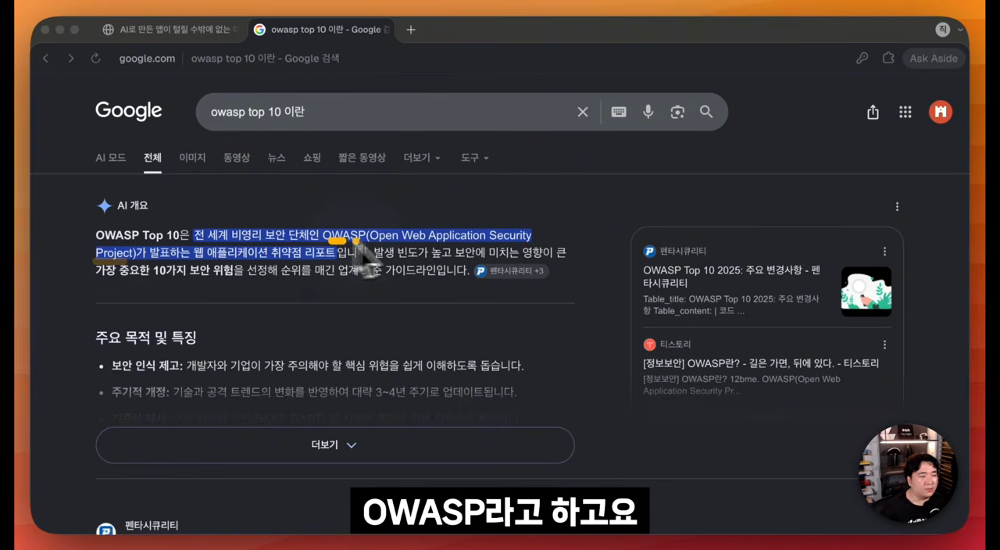
영상은 이번에 3·4부를 다뤘고, 1·2부(API 키·환경변수, 데이터베이스 접근 권한)는 이전 영상에 있다고 안내하며 마무리해요.